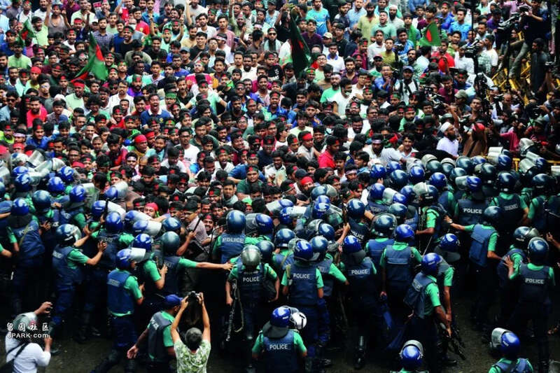
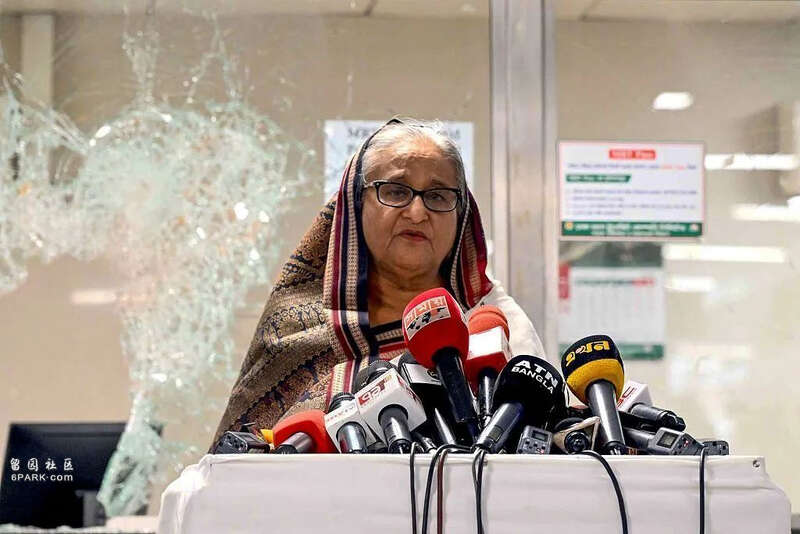
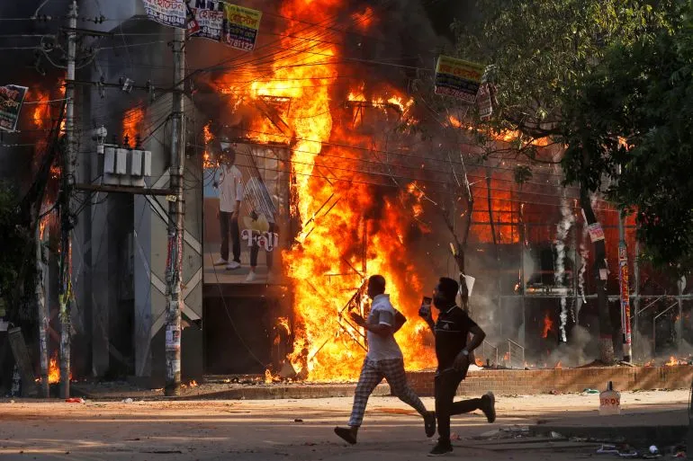

这场全国性抗议，并非只是“考公”之争
过去几个星期，南亚国家孟加拉国经历了几十年来最严重的骚乱。一场由于大学生不满政府恢复“公务员配额制”而爆发的和平抗议，在反对党介入和当局强力镇压后，逐渐演变为暴力冲突，导致上百人身亡。

7月11日，孟加拉国达卡，抗议人群与警察发生冲突。图/视觉中国
为恢复街头秩序，孟加拉国政府实施戒严并切断互联网服务。7月28日，在断网10天后，孟加拉国恢复了4G服务，但WhatsApp、TikTok等社交媒体平台仍然受到限制。
自1971年独立以来，孟加拉国长期在政府公共部门实行招录配额制，以照顾参加解放战争的“自由战士”及其后代。近年来，由于经济下行、青年失业率高企，这项不成比例的优惠制度越来越不受公众欢迎。2018年，在孟加拉国爆发针对“公务员配额制”的全国性抗议后，当局废除了这项制度。然而，今年6月，孟加拉国高等法院一纸裁决，令该制度“死灰复燃”，抗议由此开始。
7月21日，孟加拉国最高法院作出裁决，将给老兵后代的公职配额从30％大幅缩减至5％。在此之后，孟加拉国街头趋于平静。警方逮捕了数千名抗议者，包括至少6名学生领袖。学生抗议组织表示，如果哈西娜总理不出面道歉并释放被捕的示威者，他们将在7月29日重返街头。
经过几个星期的发酵，这场抗议活动已经从学生群体对“公务员配额制”的抗议，演变为全国性的反政府抗议。此次危机，被称为哈西娜执政15年来“最严峻的挑战”。在危机持续发酵后，据新华社8月5日消息，孟加拉国总理哈西娜辞职。

7月25日，抗议活动发生后，孟加拉国总理哈西娜在米尔普尔一个被破坏的地铁站向媒体发表讲话。图/视觉中国
惠及三代的“公务员配额制”
50多年前，哈西娜的父亲、孟加拉国开国元勋谢赫·穆吉布·拉赫曼不顾顾问的反对，以政令形式建立了“公务员配额制”。根据这一制度，所有报考人员都要参加初试，但在面试阶段会依照配额招录。配额制的核心是将30％的政府职位分配给参与该国解放战争的“自由战士”，此外，战争中受害的妇女、未被充分代表的落后地区居民也享有一定比例的份额。而面向普通公民、择优录取的岗位只占20％。
配额制建立以来，其适用范围和比例经过多次调整，但一直以来择优录取的岗位份额从未超过45％。1997年，第一次上台执政的哈西娜将配额特权给予“自由战士”的子女。2010年，这些战士的孙辈也成为政策的受益人。2018年，哈西娜政府再次将给予“自由战士”后代的配额提升至30％，另外给予女性10％、贫困地区10％、少数民族5％以及残障人士1％的配额。这次调整，意味着有超过50％的公职是以配额方式分配给特定群体，择优录用的岗位下降至44％。
在人均国内生产总值（GDP）只有2600美元的孟加拉国，稳定、待遇优渥的公务员职位非常吃香，每年有超过30万人争夺4000个政府职位空缺。该国的公务员职级分为20个等级，最高级的一级公务员月薪78000塔卡（约合人民币4815元），最末尾的二十级公务员每月月薪8250塔卡（约合人民币509元），除此之外，还有一系列住房、教育和医疗补贴。而由于营商环境不佳，孟加拉国私营部门的就业率一直停滞不前，且很难提供可以与体制内匹敌的收入和福利。
2018年新政出台后，孟加拉国就爆发过一场大规模学生抗议，要求政府建立更合理的配额制度。据孟加拉国媒体报道，“自由战士”的后代只占该国人口的很小一部分，约0.12％至0.2％。在此前几届公务员招考中，录取的“自由战士”后代不到10％，远不及其享有的30％的配额。然而，即便招不满，政府部门也不愿补录普通考生。在学生的压力下，政府逐步废除了配额制，包括给予妇女和其他群体的照顾。
配额制度取消后，部分“自由战士”的后代一直在通过法律途径挑战政府的决定。今年6月，孟加拉国高等法院突然裁定，政府当初取消配额制的程序存在问题，下令恢复这项制度。据官方统计，孟加拉国大约有1800万年轻人失业，恢复配额制的举措让面临严重就业危机的毕业生深感不安，由此引发了这轮抗议。
示威活动最开始发端于孟加拉国顶尖学府达卡大学，随后蔓延至全国各高校。学生们要求取消给“自由战士”后代的30％配额，但不反对向女性和弱势群体提供配额。据当地媒体报道，为了避免成为党争的牺牲品，领导学生和平集会的组织“学生反歧视”没有选择与任何政党结盟。在运动初期，这种独立性将不同阶级、性别、地区和宗教的学生们团结起来。
虽然孟加拉国最高法院在7月10日宣布将下级法院的裁决冻结四周，但此举未能阻止局势升级。一方面，孟加拉国媒体在抗议期间披露了一项调查，在过去十几年间，孟加拉国公务员考试一直存在试题泄露的问题，加剧了学生的不满；另一方面，哈西娜的强硬态度，加剧了民众的愤怒。
“他们为什么对‘自由战士’如此不满？如果‘自由战士’的子孙得不到配额福利，那么拉扎卡尔（Razakars）的子孙配得吗？”7月14日，哈西娜对抗议活动作出回应。拉扎卡尔指的是1971年独立战争期间亲巴基斯坦的民兵组织。孟加拉国独立后，拉扎卡尔成为叛徒和反动势力的代名词。
学生们对此大为光火，反击哈西娜是“沙拉查尔”（Shairachar，意为专制者），并提出了新口号：“我是谁？你是谁？我们是拉扎卡尔。我们去争取我们的权利，我们成了拉扎卡尔。”
除了后代“考公”可以享受优待，“自由战士”每年可领取27000塔卡（合人民币16670元）的特殊津贴。因为有利可图，造假获得“自由战士”身份的事件非常猖獗。据孟加拉国主流媒体《每日太阳报》报道，近年来“自由战士”的名单越来越长，很多市长、议员以及他们的亲信可疑地获得了认证。孟加拉国解放战争研究者阿夫桑·乔杜里指出，现在这份名单已经变得非常“政治化”。与此同时，许多真正参与过解放战争的老兵没有被认证是“自由战士”。
“找工作犯了什么罪？”
“他们为什么射杀我的儿子？他没有攻击任何人。找工作犯了什么罪？”在阿布·赛义德的葬礼上，他的母亲声泪俱下。
25岁的赛义德来自一个拮据的九口之家，是家里唯一的大学生。7月16日，抗议学生和警察在孟加拉国西北部城市朗布尔一所大学门口发生冲突，赛义德身亡。
赛义德遇难前一天，执政党“人民联盟”（Awami League）的青年组织“孟加拉国学生联盟”（Chatro League）和警察在达卡大学殴打抗议配额制的学生，超过100人在对抗中受伤，局势升级。
7月16日，包括赛义德在内，有6人在抗议冲突中死亡。接下来几日，愤怒的抗议者采取了暴力回应，对政府机构和公共基础设施展开袭击，甚至冲进监狱释放了数百名囚犯。
与此同时，有关警方在抗议现场使用实弹的报道越来越多，伤亡数字急剧增加。7月17日开始，哈西娜政府切断互联网，并在全国范围内实施戒严。
针对这一局势，孟加拉国经济学家、诺贝尔和平奖获得者穆罕默德·尤努斯呼吁国际社会帮助制止这场“疯狂的杀戮”。尤努斯因开创性地使用小额贷款帮助数百万人脱贫而闻名，但他也被哈西娜视为政治威胁。今年初，尤努斯因违反劳动法被判处6个月监禁，他的支持者认为这是政治迫害。
7月21日，孟加拉国最高法院宣布最新裁决，93％的公务员名额择优录用，7％的职位采取配额制。给“自由战士”后代的公务员配额缩减至5％。与此同时，给少数民族的工作配额从5％削减至1％，给予女性的配额被取消。但该裁决仍保留了政府修改配额比例的权力。7月23日，哈西娜政府表示已准备好执行该裁决。
最高法院的裁决让孟加拉国街头暂时归于平静，但接下来局势会如何发展尚不清楚。抗议者提出了九点诉求，包括释放被捕者，相关部长及执法机构的负责人辞职，逮捕袭击学生的警察和暴徒，以及要求总理哈西娜道歉等。
“总理不是那种会道歉的人。”孟加拉国知名摄影师和作家沙希杜勒·阿拉姆近日撰文称。在阿拉姆看来，在所有这些诉求中，哈西娜的道歉也许是最重要的，但她从来没有为任何事情道歉过。
最严峻的执政危机
1975年8月，28岁的哈西娜在军事政变中失去了父母和三个兄弟。在外流亡6年后，哈西娜回国担任人民联盟主席，从此踏上了艰难的从政之路。
1996年，哈西娜第一次当选总理。执政5年后，她竞选连任失败，一直到2008年才重新掌权，赢得第二个五年任期。在那以后，哈西娜连续三次赢得选举，执政至今，有“铁娘子”之称。
因为在反恐问题上的强硬立场、奉行不结盟外交政策以及在帮助邻国缅甸罗兴亚难民上的努力，哈西娜得到了印度和西方国家的支持。除此之外，孟加拉国的经济在哈西娜执政期间取得了令人瞩目的进步。过去10年间，孟加拉国GDP年均增长维持在6％以上，贫困率从2010年的11.8％降至2022年的5％，预计将于2026年脱离“最不发达国家”行列。然而，受新冠疫情、俄乌冲突和经济全球化逆流等原因影响，孟加拉国的经济指标在近两年出现恶化。
今年1月，哈西娜在备受争议的选举中当选孟加拉国总理。选举舞弊、打压异己的指控笼罩着这次选举，投票率只有41.8％。在抗议活动爆发前，哈西娜政府的官员和她的亲信卷入腐败丑闻。其中让公众最为震惊的是，哈西娜府邸的一名勤杂工，就贪污了3400万美元。
“配额抗议只是一种普遍颓废情绪的表现，这种情绪不仅与配额有关，还与经济和政治有关。”国际危机组织亚洲项目主任皮埃尔·普拉卡什表示，许多孟加拉国民众对经济增长不平衡、严重不平等和腐败现象不满。
“政府没有预料到全国各地会出现如此激烈的反应。执政党在1月份的选举后相当自满，认为自己是不可战胜的。”孟加拉裔学者、美国伊利诺伊州大学政治学教授阿里·里亚兹认为，目前的抗议活动是哈西娜执政15年来“最严峻、最难以应对的挑战”。
面对危机，哈西娜将矛头指向反对党。在7月24日的新闻发布会上，哈西娜指控孟加拉国主要反对党民族主义党和伊斯兰大会党未能破坏上次全国大选，因此“在全国范围内从事破坏性活动，损害该国经济”。但民族主义党否认了这些指控，认为政府应对大量伤亡负责。
孟军方：总理，你只有45分钟时间走人
南亚研究通讯
印度新德里电视台（NDTV）报道，孟加拉国军方曾给予哈西娜最后通牒，要求其45分钟内辞职并出逃，前往一个未指明的“安全地点”。现证明是印度东北部城市阿加尔塔拉。
据法新社报道，她原计划向全国发表讲话，但由于暴力事件的接近，她的安全团队否决了这一提议。孟加拉国消息人士称，她的安全团队要求她立即离开，并且“她没有时间准备演讲”。
陆军总司令瓦克尔·乌兹·扎曼将军在向全国发表电视讲话时表示，军方将组建一个“临时政府”，并敦促抗议者停止暴力。他说：“我会见了在野党领导人，我们决定组建一个临时政府来管理国家。我承担一切责任，并承诺保护您的生命和财产安全。您的要求将得到满足。请停止暴力。”

今天早些时候，抗议者闯入总理在达卡的住所Gonobhaban。但到那时，谢赫·哈西娜和她的妹妹谢赫·雷哈娜已经乘坐军用直升机逃离。
目前，哈西娜已从阿加尔塔拉飞往新德里，并于随后飞往伦敦。